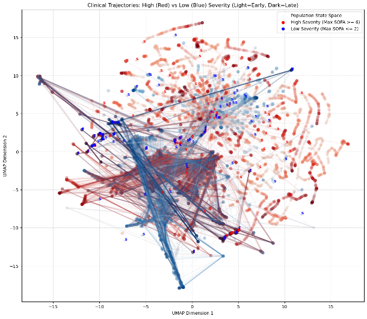
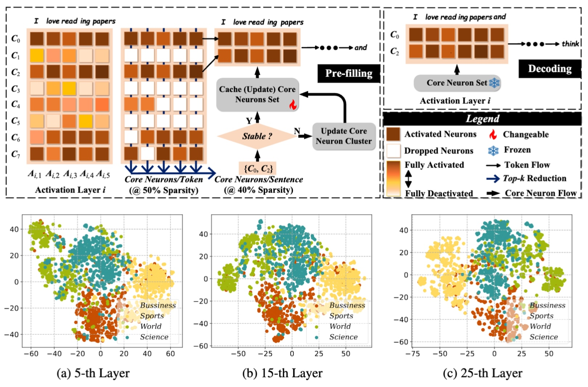
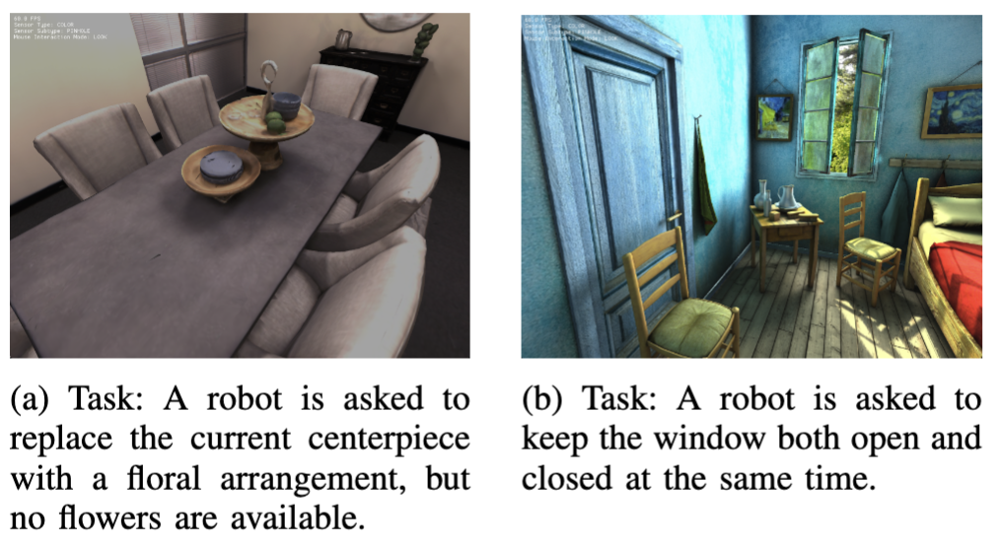
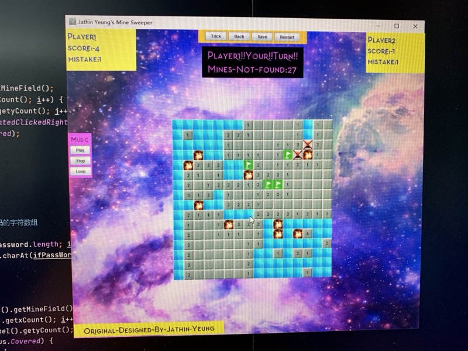

In Progress
Hi, I'm
Ph.D. Student at Duke University
Department of Electrical and Computer Engineering · Kamaleswaran Lab
Advancing the reasoning capabilities of foundation models for intelligent decision-making in complex, unstructured environments.

Hi there from Yixuan! I am a 2nd year Ph.D. student in the Department of Electrical and Computer Engineering at Duke University. I am currently a member of the Kamaleswaran Lab, where I am honored to be advised by Professor Rishi Kamaleswaran. My research focuses on Large Language Models (LLMs), Foundation Models for Electronic Health Records (EHR), and Instruction Tuning to develop advanced deep learning architectures capable of reasoning through complex medical data. Prior to this, I worked in the General Robotics Lab during my first year under the supervision of Professor Boyuan Chen, exploring Contact-Rich Robotic Manipulation and Embodied AI. My research focuses on advancing the reasoning capabilities of foundation models and deep learning architectures — leveraging instruction tuning and representation learning to build intelligent systems capable of robust decision-making in complex, unstructured environments.
I received my Bachelor's degree in Computer Science from Southern University of Science and Technology in Shenzhen, China. During my undergraduate studies, I was proud and fortunate to be supervised (Academic Advisor) by Chair Professor Xin Yao (Fellow, IEEE). In the Fall 2022 semester, I studied at the University of California, Berkeley as an exchange student and was honored to receive a recommendation letter from Professor Igor Mordatch. In my junior and senior years, I had the opportunity to be a visiting student in Professor Xinlei Chen's research group at Tsinghua University (Tsinghua University - UC Berkeley Research Institute).
I have been selected as a Student Researcher for the North Carolina AI Leadership Council (Tech, Data, & Infrastructure team), an initiative hosted by the North Carolina Office of AI and Policy to support government agencies in their AI-related decision-making.
The paper "SniffySquad: Patchiness-Aware Gas Source Localization with Multi-Robot Collaboration" got accepted to the journal - ACM Transactions on Sensor Networks.
I joined the Kamaleswaran Lab to kick off my second year.
I got my first citation in Google Scholar!
I officially started my Ph.D. journey in the General Robotics Lab at Duke University!
I was awarded the Guo Xie Bi Rong Fellowship (¥10,000), Class of 2024. (only 4%)
I was awarded as an Outstanding Undergraduate Graduate (only 25%), Class of 2024 (SUSTech), as well as a Distinguished Graduate (Top 2 out of 245 students) in the Department of Computer Science and Engineering.
The paper "Learning-Based Problem Reduction for Large-Scale Uncapacitated Facility Location Problems" got accepted to the conference CEC 2024 held in Yokohama, Japan.
The paper "Poster: Olfactory Sensing in Turbulent Airflow via Collaborative Robots" got accepted to the conference HotMobile '24 held in San Diego, United States.
I became a visiting student in Professor Xinlei Chen's lab. I worked with several Ph.D. and MS students in the project Gas Source Localization driven by Collaborative Robots.
I joined Chair Professor Xin Yao (Fellow, IEEE)'s Lab, and started doing research in large-scale UFLP Problem.
I arrived at the United States to be an exchange student at UC Berkeley. Hi California!!! (Cal's weather is soooooo fantastic!!!)
I attended the Summer Workshop 2022 in the School of Computing at National University of Singapore (NUS). We used Unity to develop a networked 2D Game.
I independently developed my very first computer science project in Java — a Minesweeper game! I received a perfect score for the course project. (Friendly reminder: ChatGPT didn't exist back then!)
Excited to start my undergraduate studies in a very youthful and energetic university - Southern University of Science and Technology in Shenzhen, China! (Always claimed to rank 8th in Mainland China.)
Due to COVID-19, schools were shut down and I was locked down at home while preparing for the Gaokao.
Honored to join Shimen High School (known as the best high school in Foshan)! My colorful high school journey kicked off!
I began my junior high journey at Shimen Experimental School (now renamed Shishi Experimental School), joining the English Specialty Class as a new student!
I got my Wechat account (much earlier than other people)!
When I was in second grade, I called the Foshan mayor's hotline 12345 to suggest building a footbridge connecting my home to the shopping mall across the road — and six months later, it was actually built.
I started my elementary school journey in Nanshi Fuxiao!
I got my first Tencent QQ account!
I spent a wonderful childhood at Beilei Kindergarten (Chancheng) and Huayuan Kindergarten (Guicheng)!
I was born in this beautiful planet (2001/05/30)!
You can also check my Google Scholar profile.

Keywords: Humanoid Robot, Unitree G1, Deep Reinforcement Learning, Imitation Learning, Manipulation
This project/paper is not published yet due to funding agency restrictions.

ACM Transactions on Sensor Networks (Jan, 2026) (DOI: 10.1145/3786599)
HotMobile 2024: Proceedings of the 25th International Workshop on Mobile Computing Systems and Applications

CEC 2024: IEEE Congress on Evolutionary Computation

Advised by Rhodes Family Distinguished Professor Vahid Tarokh (NAE Member).

Advised by Rhodes Family Distinguished Professor Vahid Tarokh (NAE Member).

Advised by Professor Boyuan Chen.

Advised by Professor Yepang Liu.
If you're in mainland China, you may need a VPN to access this link.
Visitor Map
This site was last edited on Feb 19, 2026.